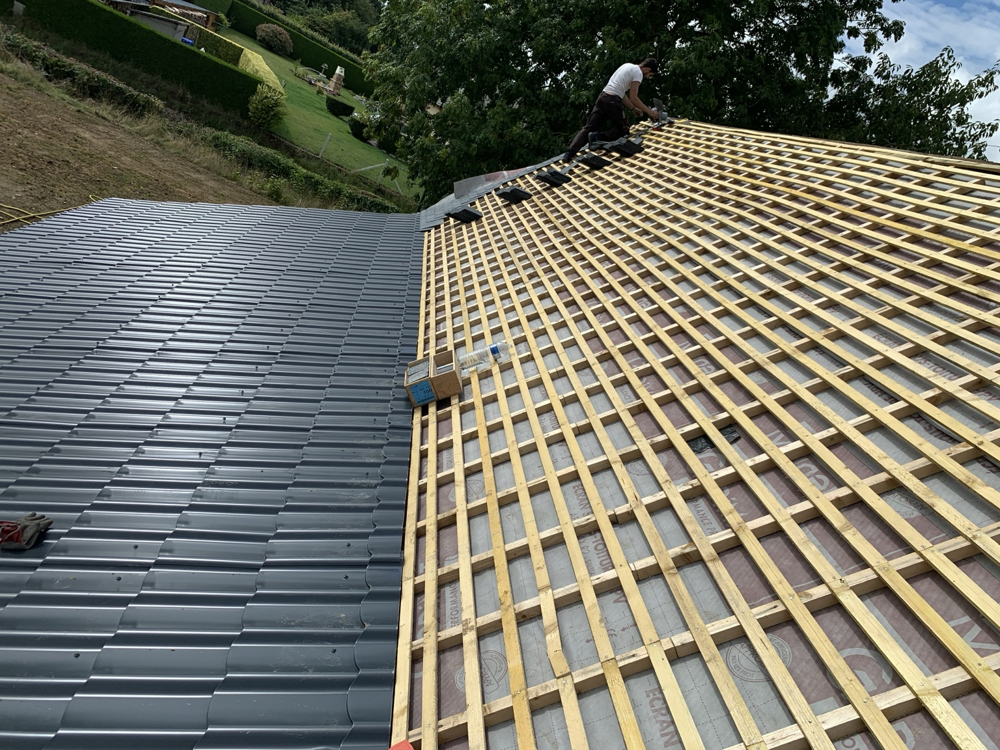
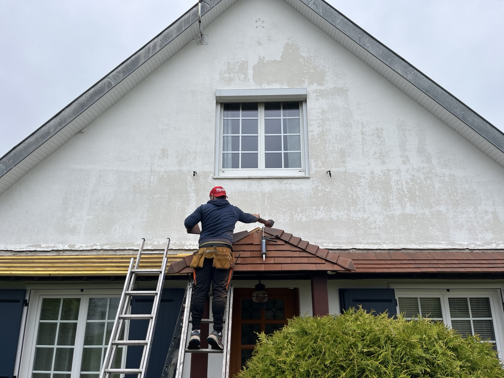
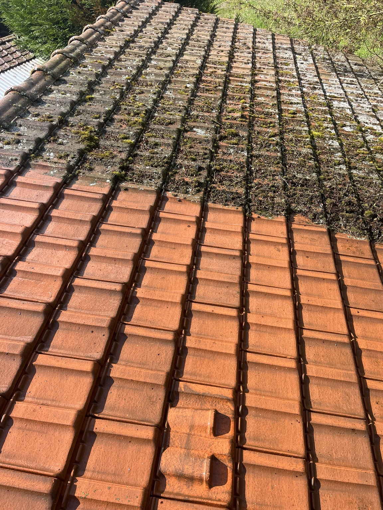

Rénovation de toiture
Préparation et pose de couverture.
Couverture, rénovation, réparation, entretien et fenêtres de toit. Découvrez les réalisations de LP Rénov Toiture.
Le site est organisé par métier pour répondre aux recherches des clients sans multiplier artificiellement les mots-clés.
Interventions sur les couvertures et éléments de toiture, de la préparation du support à la pose des éléments de couverture.
Réfection et rénovation de toiture avec préparation du support, remplacement des éléments nécessaires et remise en état de la couverture.
Recherche des points d'infiltration et travaux de réparation sur les zones défectueuses de la couverture et de l'étanchéité.
Nettoyage des couvertures présentant mousses, lichens et dépôts, avec traitement adapté à l'état du support.
Travaux sur les gouttières, chéneaux, raccords et éléments périphériques nécessaires à la bonne évacuation des eaux pluviales.
Pose ou remplacement de fenêtres de toit et réalisation des raccordements d'étanchéité autour de l'ouvrage.
Les photos fournies par l'entreprise sont intégrées au site et servent à présenter concrètement les interventions.

Préparation et pose de couverture.

Toiture avant entretien.

Fenêtre de toit et étanchéité.
Les pages locales seront créées uniquement pour les secteurs réellement desservis.
Contactez LP Rénov Toiture pour échanger sur votre chantier.